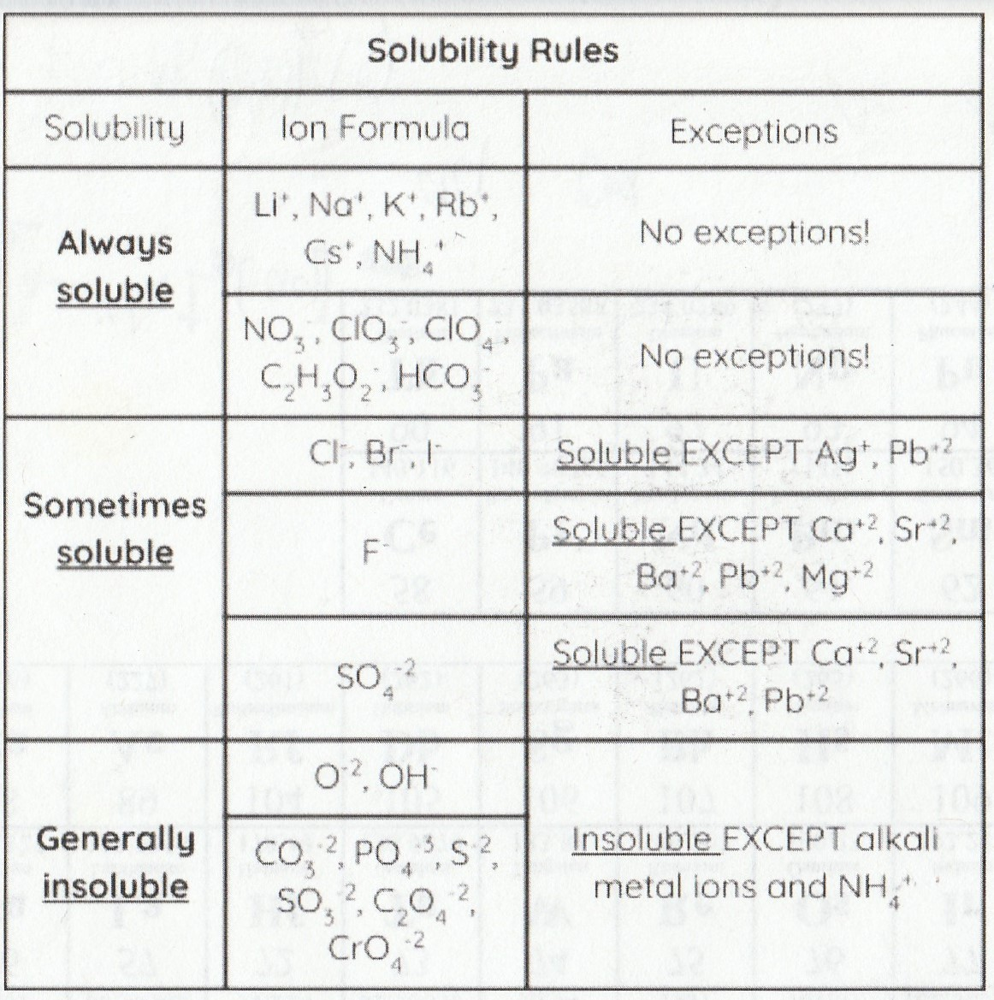

Physical Change vs Chemical Change:
- Physical change occurs when a substance undergoes a change in properties, but not a change in composition. So phase changes like sublimation (solid→gas) or deposition (gas→solid). Only IMF's are broken/formed.
- A chemical change occurs when substances are transformed into new substances with different compositions, so when chemical bonds are broken or formed
Net Ionic Equations:
Net Ionic Equations still show all the phase changes.
Only ionic compounds can separate into ions in aqueous solutions. Of course that also is subject to the solubility rules, but the general rule of thumb is that strong acids, strong bases, and soluble ionic compounds split into ions.
Covalent compounds change phase of matter. Weak acids and bases, gases, pure liquids, or insoluble ionic solids don’t split into ions.
Here are some of the solubility rules:

For a more complete list: